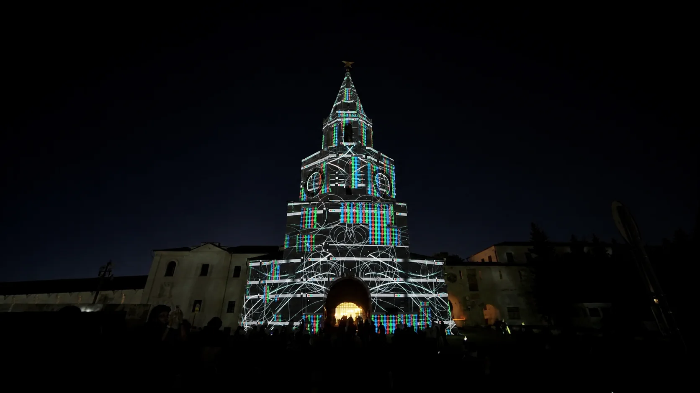
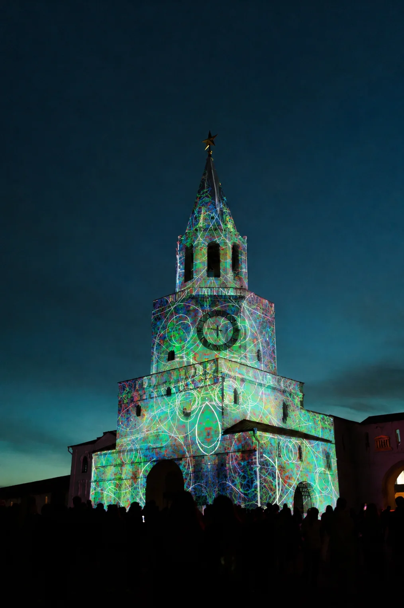
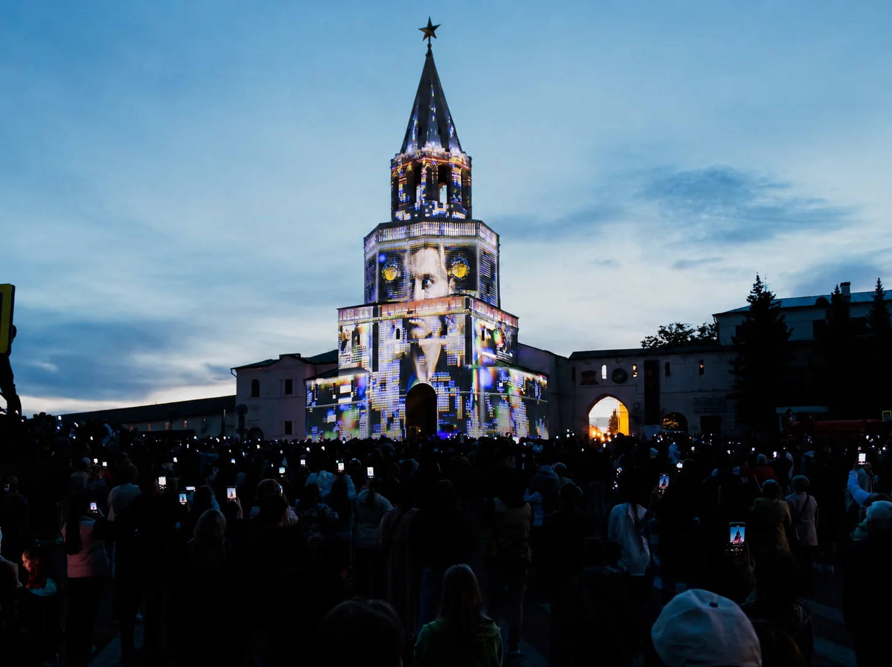

Null ID
空值 ID

一段 Mapping 影像——无意义的像素缝合成一张张面孔，凝视着现实，却没有一个真实的人。
如今，图像的生产早已脱离画框，化作包围身体的空间环境。当媒介开始拥有重塑现实的能力，我们面对的不仅是感官的过载，更是“人类主体性”的深刻危机。
“ID系列”新作《NULL_ID》将视角切入这场危机。在AI拟像泛滥的当下，作品以代表“拒绝赋值”的 NULL 为名，探讨数字时代下的身份消亡与“技术易容”。视觉被强制降维至电子媒介最底层的物理颗粒——无信息的RGB像素点阵。这些毫无意义的代码颗粒在不断流转中缝合成一张张虚构的面孔，它们凝视着现实，却不具备任何真实的人类属性。作品试图用这种由底层代码驱动的虚拟伪装，去瘫痪当下过度运转的意义生产系统，拷问何为真实的自我。
A projection-mapping piece: meaningless pixels stitch together faces that gaze at reality, with no one real behind them.
Today, image production has long broken free from the confines of the frame, expanding into spatial environments that completely engulf the physical body. As media acquire the power to directly reshape reality, we are confronted not merely with sensory overload, but with a profound crisis of human subjectivity.
NULL_ID, the latest work in the "ID Series", dives directly into this crisis. In an era saturated with AI simulacra, the title draws upon "NULL"—a code term denoting an unassigned value or a refusal to be defined—to explore the dissolution of identity and the "technological masquerade" in the digital age. The visual language is forcefully stripped down to the lowest physical denominator of electronic media: an array of meaningless RGB pixels. In their continuous flux, these senseless data particles stitch together fabricated faces that gaze out at reality, yet remain entirely devoid of any genuine human essence. By deploying this code-driven virtual camouflage, the artwork seeks to paralyze our hyperactive system of meaning production, ultimately interrogating the very nature of the authentic self.

